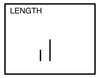
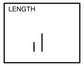
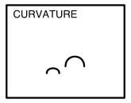
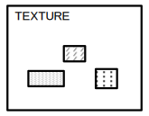
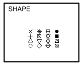
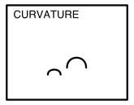
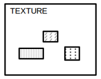
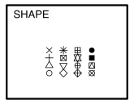

| time | topic |
|---|---|
| 1:30-1:45 | Why, philosophy and benefits |
| 1:45-2:05 | Organising data to map variables to plots |
| 2:05-2:35 | Making a variety of plots |
| 2:35-3:00 | Do but don’t, and cognitive principles |
| 3:00-3:30 | COFFEE BREAK |
Creating data plots for effective decision-making using statistical inference with R
Why
Which is the best display to answer the previous question?

These are the tools you need

install.packages("ggplot2")or better yet:
install.packages("tidyverse")- Define your plots using a grammar that maps variables in tidy data to elements of the plot.
- Wrangle your data into tidy form for clarity of plot specification.
space

install.packages("nullabor")- Compare your data plot to plots of null data.
- This checks whether what we see is real or spurious.
- Also allows for measuring the effectiveness of one plot design vs another.
Tidy data

- Each variable forms a column
- Each observation forms a row
- Each type of observational unit forms a table. If you have data on multiple levels (e.g., data about houses and data about the rooms within those houses), these should be in separate tables.
Illustrations from the Openscapes blog Tidy Data for reproducibility, efficiency, and collaboration by Julia Lowndes and Allison Horst
Example 3 (4/5)
geom: bar
year to x \(~\) count to y \(~\) fill and facet to sex \(~\) facet by age
Incidence is higher in the middle age groups.
Where’s the temporal trend?
Example 3 (5/5)
geom: point, smooth
year to x \(~\) count to y \(~\) colour and facet to sex \(~\) facet by age
Temporal trend is mostly with males.
Hierarchy of mappings

 



 

Cleveland and McGill (1984)
Illustrations made by Emi Tanaka